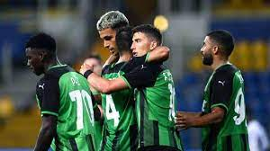
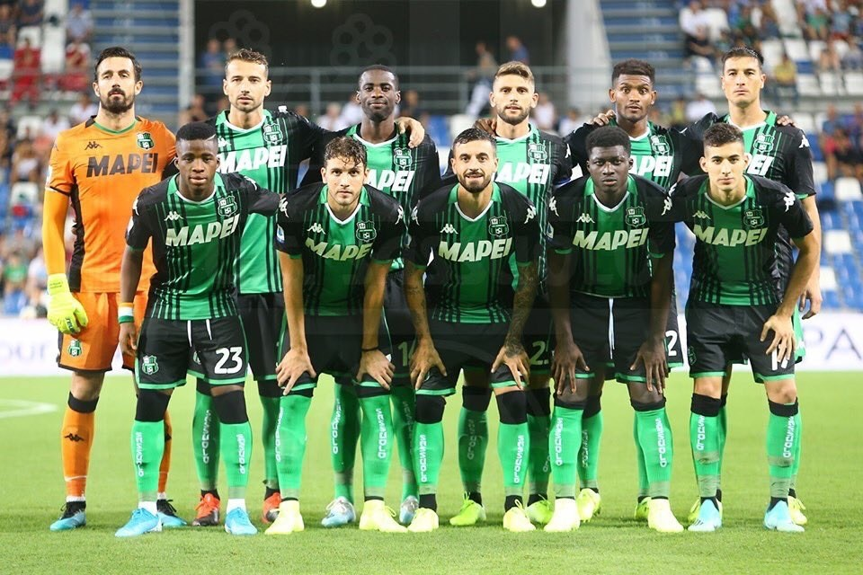
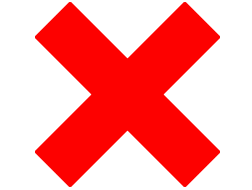

Om oss
Årølia United ble stiftet 24.juni 1975 av grunnlegger Elias Muri. Den som ville være med måtte betale 30 kroner i kontigent. I sommeren 1976 fikk Årølia United sine første drakter - både grønn trøye og grønn shorts. Grønt har siden vært Årølia Uniteds klubbfarger. Laget startet opp i det som var Norges 6.divisjon, og siden den gang har laget spilt seg oppover i systemet.
Høydepunktet i klubbens historie for fotballgruppa var å bli seriemestere, 28. juni 2012. Sesongens siste kamp var avgjørende for lagets plassering, ettersom at Årølia United lå 2 poeng foran favorittene Molde FK. Og den siste kampen ble spilt borte mot ingen ringere enn Molde FK. Aker Stadion var fullpakket, med 10 300 tilskuere - alle klar for å se hvem som blir kronet til seriemestere. Gjennom en tøff kamp med mange sjanser, ble kun én ball satt bak i nettet. Det var Årølia Uniteds nummer 10, Erik Huseklepp, som også ble kampens beste spiller.
Bunnpunktet til klubben kom i 2004 da klubbhuset brant ned. Historien skal ha det til at brannen startet som følge av at en barnehage kastet en engangsgrill i et søppelspann som etterhvert tok fyr og tok med seg hele huset. Noen år senere gikk flere bedrifter sammen om å være med å bygge opp klubbhuset på nytt, da med styrkerom, kondisjonsrom og innendørs fotballbane.
Lagbilde 2021
Tabell - Eliteserien
| # | Lag | Kamper | Poeng | Mål |
|---|---|---|---|---|
| 1 | Molde FK | 26 | 55 | +29 |
| 2 | Årølia United | 26 | 50 | +25 |
| 3 | Bodø/Glimt | 26 | 47 | +8 |
| 4 | Viking | 26 | 43 | +17 |
| 5 | Strømsgodset | 26 | 43 | -1 |
| 6 | Stabæk | 26 | 42 | +6 |
| 7 | Lillestrøm | 26 | 38 | +7 |
| 8 | Vålerenga | 26 | 35 | -5 |
| 9 | Brann | 26 | 34 | +4 |
| 10 | Sarpsborg 08 | 26 | 34 | +2 |
| 11 | Haugesund | 26 | 30 | -8 |
| 12 | Odd | 26 | 28 | -13 |
| 13 | Mjøndalen | 26 | 28 | -14 |
| 14 | Tromsø | 26 | 20 | -17 |
| 15 | KBK | 26 | 17 | -11 |
| 16 | Rosenborg | 26 | 3 | -39 |
Siste kamper
| Årølia United | 7-1 | RBK |  |
|---|---|---|---|
| Mjøndalen | 2-2 | Årølia United | |
| Vålerenga | 0-3 | Årølia United | |
| Årølia United | 1-2 | Bodø/Glimt |  |
Om klubben
Stiftet: 24. juni 1975
Seriemester: 2012
Flest klubbkamper: Trond Viggo (867)
Flest klubbscoringer: Olav Simonsen (203)
Offisiell drakt: Grønn trøye, grønn shorts, grønne strømper
Supporterklubb: Kunstgresset